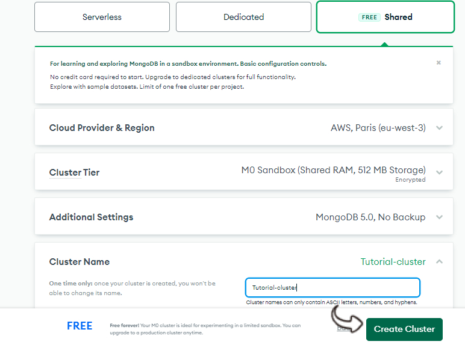
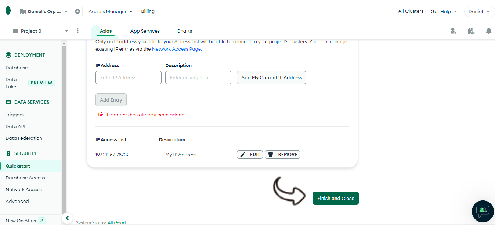

Creating a Mongo Database Cluster is the first step to working with mongodb. This article will take you through a step by step guide on how to create a free mongo database in the mongodb official website and generate a Database Connection URL.
A Database Connection URL is a string that your DBMS JDBC driver uses to connect to a database. It can contain information such as where to search for the database, the name of the database to connect to, and configuration properties.
ref: docs.oracle.com
To use mongodb, you'll need a free MongoDB Atlas Account. Follow the following steps to do so:
Notice the "project menu" at top-left coner. Every Mongodb Database must be in a project. Mongodb creates a default project ( 'project 0' ), but you can create as many projects as you want by clicking on the project menu. We'll be using the default for now.
Now lets create your first Database:
Any of the deployment option will work for this tutorial, but I'll recommend starting out with the free Shared option for learning and exploring MongoDB in a sandbox environment..
You can provide addition information about your Database Cluster, such as Cloud Provider & Region, Cluster Tier etc. I have left every option as default except for the Cluster Name which I've changed to Tutorial-cluster
To access data stored in Atlas, you'll need to create users and set up network security controls.
Choose Username and Password as your authentication method and create a user
Choose My Local Environment as your network access method and click "Add My Current IP Address" to give connection access to your current device
Click "finish and close"
Now our Database is created, we can now generate a Connection URL to connect to our Database
Don't forget to replace the <password> param with your Mongodb Atlas Account password